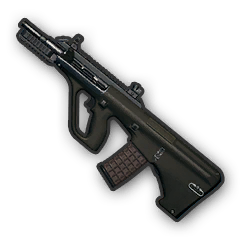

Assault Rifles
| Img | Name | Damage | Speed | Ammo | Mode |
|---|---|---|---|---|---|
 |
AKM | 49 | 715 m/s | 7.62 mm | Single, Auto |
|  | AUG | 43 | 940 m/s | 5.56 mm | Single, Auto |
 |
Groza | 49 | 715 m/s | 7.62 mm | Single, Auto |
 |
M16A4 | 43 | 900 m/s | 5.56 mm | Single, Auto |
 |
M416 | 43 | 880 m/s | 5.56 mm | Single, Auto |
| QBZ | 43 | 870 m/s | 5.56 mm | Single, Auto | |
 |
SCAR-L | 43 | 870 m/s | 5.562 mm | Single, Auto |
Summary
Assault Rifles are weapons with medium-high ammo capacity and the ability to place a lot of rounds downrange quickly. While they don't boast the ammo limit of Light Machine Guns, they trade it for a much higher accuracy
Similarly, there is a trade-off with higher accuracy weapons like DMRs or Sniper Rifles in that those weapons have a much lower rate of fire and ammo capacity compared to Assault Rifles. As such, Assault Rifles are a midpoint between the weapons in BATTLEGROUNDS.